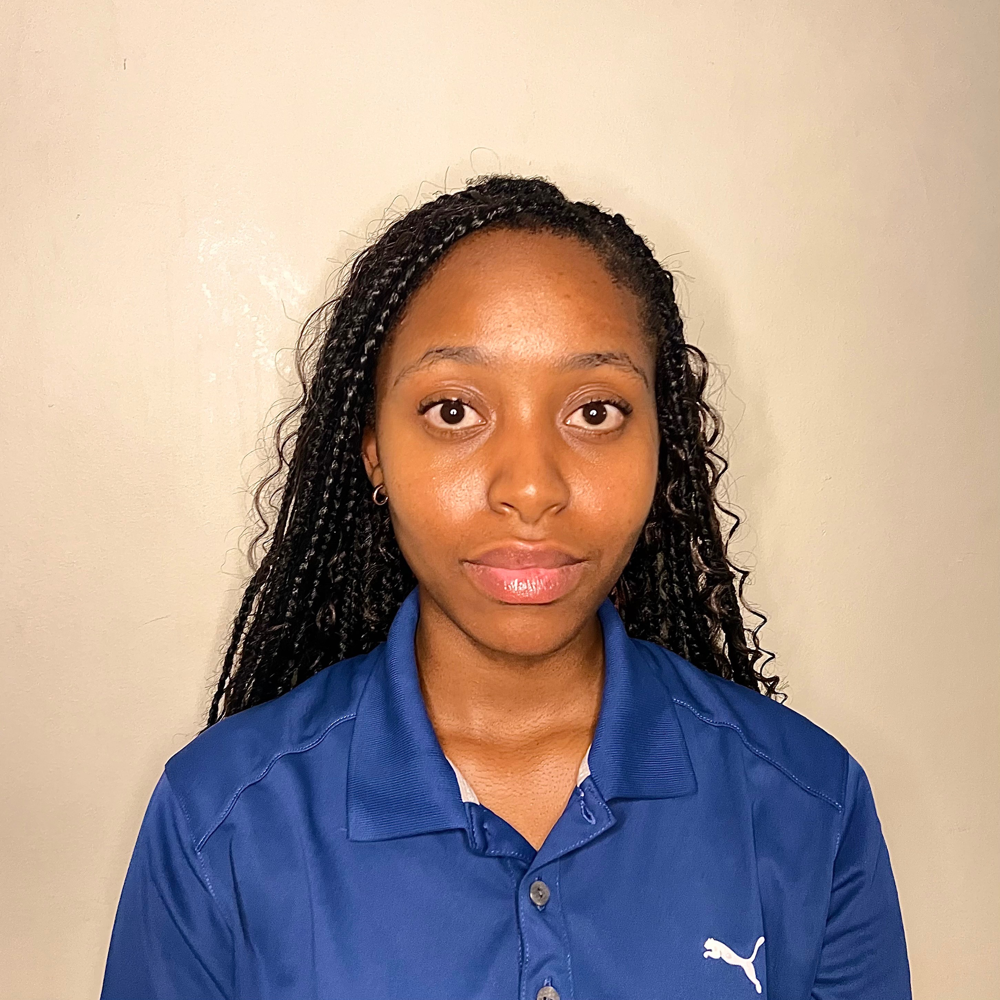

Banele Mareletse

Personal statement
An adaptable and dedicated individual with a hunger for knowledge and development.
I am diligent, goal-oriented and hardworking, and I will ensure I quickly add value
to your team if you hire me. Although I do not have much work experience yet, I more
than make up for this with my enthusiastic nature, my positive attitude, and my
willingness to learn from others.
Education
- Glenvista High School (2019-2023)
- Teacher Record 120-Hour TEFL Certification (08/2024-09/2024)
Working Experience
Sale Assistant (Games and Gadgets)
2025/04/01-2025/06/01
- Assisted walk-in customers with product recommendations, purchases, and troubleshooting game-related queries
- Managed in-store sales, POS transactions, and occasional stock-taking
- Provided informal tech support for consoles and games (e.g. installations and account issues)
- Built rapport with regular customers and helped boost daily sales through upselling and great service
- Adapted to a fast-paced retail environment with minimal training
Freelance English Teacher (TEFL Certified)
2024-2025/03/01
- Taught conversational and academic English to B1-B2 level learners, including young adults
- Designed engaging lessons tailored to student interests (e.g. gaming, culture, daily life)
- Adapted to different learning styles and provided regular progress feedback
Skills
- Video editing
- Creativity
- Time Management
- Effective Communication
- Resilience
- Tech Savvy